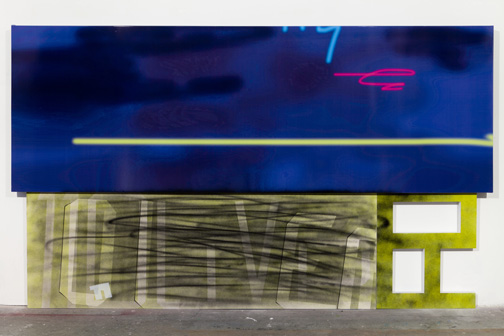
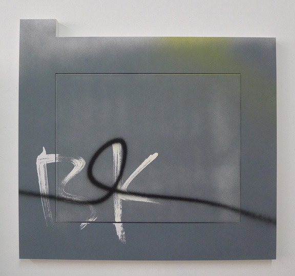

-
Dividing Line: Wendy White at Leo Koenig
by Brian Dupont October 8, 2012
Wendy White’s paintings have always walked a fine line between abstraction and real world reference, between gestural immediacy and polished construction. She does not walk an easy path in painting. As an artist interested in mining the dense marks and language of the urban environment, married with a concern for contemporary abstract painting, the easiest thing in the world would be to embrace a provisional aesthetic of rough materials and utilitarian supports. Instead, she has maintained a dedication to craft that is born of constructing the elements of her work in her studio, herself.1 The level of polish is a matter of choice despite its raucous pictorial anarchism2 and it is this precision that situates her work squarely within the progression of abstraction that began with Post-war American art. Pollock and his skeins of paint hanging in the air before impacting the canvas are an obvious touchstone (followed by the seemingly manic scrawl of Twombly), but her work also looks to de Kooning and the old world craft of the sign painter. In her new exhibition at Leo Koenig, Pix Vää, her use of photographic imagery and digital printing continue that progression through the influence of Rauschenberg’s photomechanical collage to present day technologies. Yet White’s paintings are not a mere accumulation of influence, and her incorporation of present day signage signals an artist looking to expand the scope of her work.
Expectations tend towards ever increasing complexity, radicalism, and experimentation, and any simplification or consolidation is read as a retreat or acquiescence to maturity.3 It’s as if artists are expected to grow up, settle down, and move to a house in the suburbs. White is resolutely urban artist, but her Fotobilds trade in the downtown energy of her classic# text paintings for the more orderly rectilinear stacking of the uptown grid. White’s introduction of photography comes at the expense of painted gesture, and its implementation feels transitional. This is highlighted by the segregation of elements within the work. Modifying the typical store awning into a closed painting stretcher, the photographic imagery projects farther forward off the wall, and wraps around the edges of the support as the paint on the canvases or PVC elements do not.4 Where her earlier work referenced urban marking, and her zigzag airbrushed scrawl functioned as a material negation that physically covered the surface, the awnings evidence the super flatness of digital printing, pristine and unmarred.5 They stand out both literally and figuratively from the other elements in her work.
White’s ’11 Oliver,’ 2012. courtesy of Leo Keonig, Inc, New York.
So why are they here? White took the photos and manipulated them in photoshop herself, and the references are personal and particular. The titles are derived from the location, but her alterations only make the connection recognizable if they are explained. (For Pix Vää the gallery has supplied a broadsheet poster that includes both images of the works and some of White’s source photos.) 11 Oliver is a fine example of the kind of found, real world abstraction White has long referenced, taking a metal wall used to hide trash storage and documenting its evolution as a surface that accumulates marks.6 Steel is transformed into data and eventually output as flat vinyl that removes any trace of the wall’s otherwise resolutely tactile materiality. Likewise the fluorescent “sprays” that sit within the inky field lack any animation, and suggest an origin in the drag of a mouse rather than the painter’s hand or arm. The speed and urgency of their adjacent airbrushed relatives is absent. But again, that makes them different, not better or worse — why is White striking out on this path and what dictates the separation of process and material from imagery?
A more direct look at the division of structures is played out in the smaller scaled PVC series. Reminiscent of Robert Mangold’s early panels based on office partitions, these shaped paintings7 turn the contours of her letter fragments into a tightly fit frame for a distinctly separate canvas. It sits on the same plane, and both together provide a painting surface at once unified and divided. As any carpenter will tell you, such an edge is nearly impossible to disguise without filling in and covering over the gap; the division is a specific choice. The painting itself gives no sense of hierarchy, as color and imagery are the same between frame and canvas;8 even the off-center and seemingly casual placement of the canvas serves to keep it equal with the perimeter. The frame contains as much surface area as the panel so it is more appropriate to consider the entire unit as “the painting.” The true emphasis is on the dividing line rather than either section, but the real world reference is that of usable objects, where structure and assembly are everyday occurrences. White turns something simple (a door, a barricade) into art by translating that common object’s entire history.
White’s ’26 Eldridge,’ 2012. courtesy of Leo Keonig, Inc, New York.
This is what White may gain by bringing the photographic image into her paintings: a greater connection to the city, the world around her. The value of painting to an artist who creates absolutely everything herself is that it remains a medium where that is possible. White’s insistence on personal craft is less an issue in today’s art world of assistance and production specialists; the division of labor is no longer a hindrance to authentic gesture.9 There is a value in reticence and in not rushing to adopt the next new technology at the expense of craft and technique, yet it is just as important to consider what that craft and technology are being used for and how they can benefit an existing medium. Eventually sign painters succumbed to newer and more efficient technology, but without their knowledge we wouldn’t have the work of de Kooning or Gorky, or even a work as challenging to the structure of painting such as Rosenquist’s F-111. White is continuing this tradition, and it is not a process that can happen overnight.10 Expansion, renovation and construction take time, but this exhibition shows the beginning of the process. White draws a line against painting in favor of the possibilities opened to art and artist.
Wendy White’s ‘Pix Vää’ runs through October 20 at Leo Keonig, Inc, 545 West 23rd Street, New York.
- She is very insistent on this point in many interviews. See Bad at Sports and Curbs & Stoops for particularly in-depth and valuable discussions. [↩]
- Anyone can make something look slapdash and rushed; on the other hand to choose that over a highly polished finish assumes that one has the requisite skill to complete the job to a higher standard. It is an extension of the old trope that an artist must somehow “earn” the right to work abstractly by “proving” that they have the requisite skill to work representationally. This mindset fundamentally assumes that abstraction is some sort of con-job. It is also the dividing line where aesthetics and construction part ways: when the painting fails and falls apart there isn’t physical debris that is going to land on by standing viewers. [↩]
- Until the very end, when such reserved is accorded the wizened calm of old age. The narratives that are imparted onto art usually tell us more about ourselves than they do the work itself. [↩]
- If the work is unframed, the edges and sides of a painting are an excellent place to see how a painter approaches their craft. The sides of the PVC panels she uses to construct her letter or number fragments are a finished white, and the edges of her canvas lack any over spray or unsightly drips. [↩]
- I feel it is important to acknowledge that the precision of technical process White brings to her work may make painting onto stretched vinyl a dicey proposition; not just any paint is likely to stick, and a spray of unconsidered industrial paint would be just as jarring within the works as is the separation. [↩]
- Which is a suitable basic definition for painting. [↩]
- Or “painting.” Only one work, 7 Monroe, is actually on view. The remaining nine works are may be viewed on Leo Koenig’s website. [↩]
- Which has as much surface area as the canvas, and is for all intents and purposes a panel. [↩]
- However how much value (or more importantly, relevance) there is in any gesture, authentic or no, is still up for debate, perhaps more-so than ever. [↩]
- Or over the course of a single exhibition. [↩]